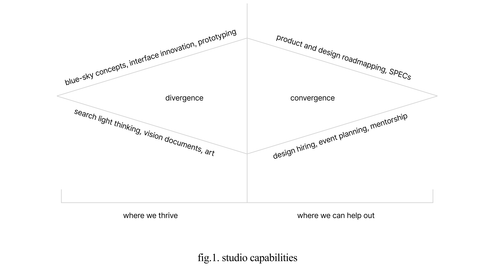

Imagine this. You’re lost in a cave, unsure where the exit is. A light appears. After a few moments, you make out that the light belongs to a guide with a lamp.
“are you lost? I’ll take you to the exit you need” they ask.
This is what I do best, navigate the ambiguous. I'll guide you to an exit that will best accelerate your goals. You know where you want to go, I know how to get you there. I expand possibilities in ways that you didn’t think were possible. I am not a product design shop you contract out to solve a user flow, I am a partner to bring perspectives that other designers can’t.
I am a possibility expander. See work
In more detail, here are the ways that I can contribute:
- Run a discovery process of your vision and design a 0-1 product
- Formalize your product process by building your design and engineering roadmap
- Prototype and craft innovative interfaces
- Do an audit of your product and generate a deck with insights and things to improve
- Be a design advisor or mentor
Let’s talk about the way that I like to work. I am an embedded design partner, which means that your dream becomes my dream. It’s not necessary, but I prefer being in person. The amount of magic and collaboration that happens in real-time is miles better than email, slack, or zoom.
Throughout our collaboration, I will listen to your vision, hear your users, and then design the best product for you. You know the market, I’ll go find the product.
We'd be a great fit if you have these thoughts:
- “I have a vision, but don’t know how to execute on it”
- “I am bored of using standard design patterns, I want something more innovative”
- “We lack a level of craft”
- “I need a different perspective”
- “I just want to discuss what I care about with someone”
- “I want to think deeply about something”
- “tab bars need to die”
Now let’s talk about what type of thoughts I have:
- “Tech needs more design architects, not design construction workers”
- “Craftsmanship is a dying art”
- “Over-optimizing for growth is the enemy”
- “More tools, not nested operating systems”
- “Interfaces should stand on their own as art”
- “Optimize for play”
- “tab bars need to die”
Here are some companies I've helped along the way:
- Universe – from Series A to $30m Series B (Apple Design Award)
- “Daniel’s searchlight capabilities are next to none. Company momentum gets accelerated with the concepts and product ideas he produces. He understands how creative tools should be made and how to make them the most playful.” Joseph Cohen, CEO
- [untitled] – from 300 to 50,000 users and a three year vision roadmap
- “There’s no one better at utilizing the space of a mobile device. Dpark’s interface solutions are simple, but have depth. His interface craft is art.” Dan Lillienthal, co-founder
- Typo – from vision to product
- “dpark is the most talented and efficient product builder I’ve seen. Beyond that though, his brain and how he thinks about design is what I’ll miss the most. There’s no one else in the world who I would want to think about my product with.” Sahil Handa, CEO
Convinced? Get in touch